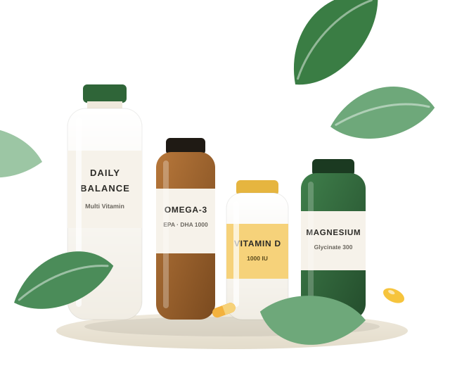

오늘도 더 건강한 하루
영양제로
건강한 변화를 시작하세요.
나에게 맞는 영양제 성분을 찾고, 같이 먹어도 되는지 궁합을 확인하고, 먹는 시간까지 정리해 꾸준한 관리로 더 나은 일상을 만들어보세요.
- 식약처 인정 기능성 기준
- 제품·뉴스 매일 자동 갱신
- 특정 제품 보증 없는 성분 중심 정보
작은 습관이 큰 변화를 만듭니다.

다양한 영양제 성분
37개 성분 효능·권장량 정리
나에게 맞는 조합
97쌍 궁합·복용 시간표
식약처 신고 제품
–건 성분별 검색
간편한 구매 연결
쿠팡·11번가·G마켓 바로가기
카테고리로 더 쉽게 찾아보세요
전체보기영양제 궁합 빠른 체크
같이 먹어도 될까?
두 가지만 골라 보세요.
함께 먹으면 좋은 조합인지, 시간을 띄워야 하는지 이유와 함께 바로 알려드립니다. 3개 이상은 궁합 체크 페이지에서 한 번에 확인하세요.
많이 찾는 영양제 성분
특정 제품이 아니라 성분 기준으로 효능·권장량·궁합을 정리했습니다.
나만의 복용 시간표를 만들어보세요.
먹고 있는 영양제를 모두 고르면 아침 공복·식후·취침 전으로 간격까지 고려해 정리해 드립니다.
영양제 추천 가이드
고민과 상황에서 출발하기
고민을 고르면 핵심 성분·조합·먹는 시간이 정리되어 있습니다.
고민별
대상별
복용법·안전
전체 가이드 보기이용 방법
3단계면 충분해요
STEP 1
먹고 있는 영양제 선택
종합비타민부터 유산균까지, 지금 먹고 있거나 먹으려는 성분을 모두 고르세요. 최대 8개까지 한 번에 분석됩니다.
STEP 2
궁합 결과 확인
좋은 궁합·주의·피해야 할 조합을 이유와 함께 보여드려요. 3개 이상이면 한눈에 보는 매트릭스도 제공됩니다.
STEP 3
하루 복용 시간표 받기
흡수를 방해하는 조합은 자동으로 시간을 나누어 아침 공복·식후·취침 전으로 정리한 시간표를 만들어 드립니다.
지용성은 식사와 함께
비타민 A·D·E·K, 오메가3, 루테인, 코엔자임Q10은 기름기 있는 식사 직후에 먹어야 흡수가 잘 됩니다.
칼슘과 철분은 2시간 간격
같은 시간에 먹으면 철분 흡수가 크게 떨어집니다. 철분은 아침 공복, 칼슘은 저녁 식후가 기본입니다.
유산균은 공복에
위산이 적은 기상 직후나 취침 전이 균 생존에 유리합니다. 항생제와는 2~3시간 띄우세요.
중복 성분은 합산 계산
종합비타민·눈 영양제·간유에 비타민A·아연·셀레늄이 겹치기 쉽습니다. 상한 섭취량을 넘기지 마세요.
커피·녹차와 철분은 따로
카테킨·탄닌이 철분과 결합해 흡수를 막습니다. 비타민C와 함께 먹으면 반대로 흡수가 올라갑니다.
약을 먹고 있다면 꼭 상담
와파린·갑상선약·항생제·혈압약은 여러 영양제와 상호작용합니다. 시작 전 약사·의사에게 확인하세요.
뉴스·자료
영양제 최신 소식
제품 찾기
식약처에 신고된 제품을 성분별로, 바로 구매처까지
식품안전나라 공공데이터를 바탕으로 성분·기능성·형태별 제품을 찾고 쿠팡·11번가·G마켓 검색 결과로 바로 이동할 수 있습니다. 신규 등록·변경 제품은 매일 자동 반영됩니다.
FAQ
자주 묻는 질문
영양제 궁합은 왜 중요한가요?
칼슘과 철분처럼 같은 시간에 먹으면 서로 흡수를 방해하는 조합이 있고, 비타민D와 칼슘처럼 함께 먹어야 효과가 커지는 조합도 있습니다. 섭취 시간만 나눠도 같은 영양제로 더 나은 효과를 얻을 수 있습니다.
영양제는 공복에 먹나요, 식후에 먹나요?
지용성 성분(비타민A·D·E·K, 오메가3, 루테인, 코엔자임Q10)은 지방이 포함된 식사 직후가 흡수에 유리합니다. 철분·유산균·아미노산 계열은 공복이 유리한 경우가 많고, 위장 부담이 있는 미네랄은 식후를 권장합니다.
이 사이트의 제품 정보는 어디서 가져오나요?
식품의약품안전처 식품안전나라의 건강기능식품 품목제조신고 공공데이터를 매일 수집해 성분별로 정리합니다. 구매 링크는 쿠팡·11번가·G마켓 등 쇼핑몰 검색 결과로 연결되며, 제휴 링크를 통해 수수료를 받을 수 있습니다.
약을 먹고 있는데 영양제를 먹어도 되나요?
각 성분 페이지의 '약과 함께 먹을 때' 항목과 약과 영양제 가이드에 대표적인 상호작용을 정리해 두었지만, 이 정보는 참고용입니다. 처방약을 복용 중이라면 영양제를 시작하기 전에 반드시 의사·약사와 상담하세요.